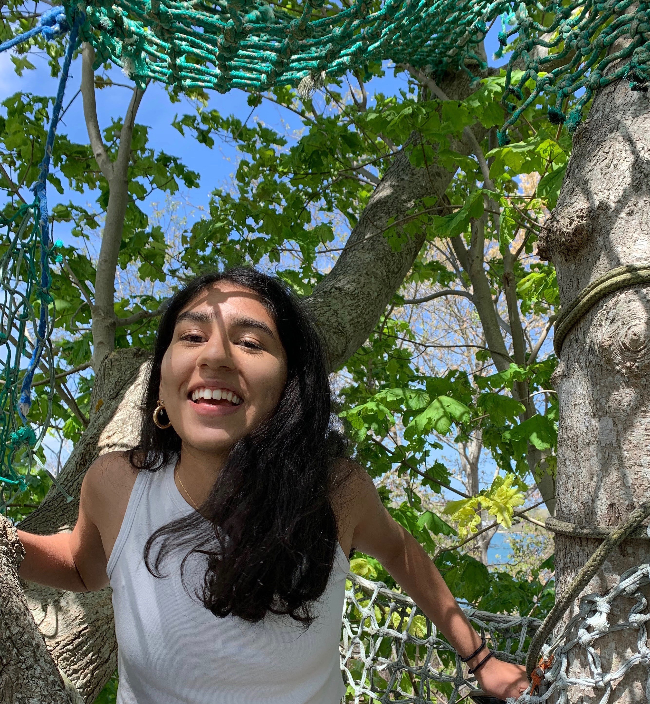
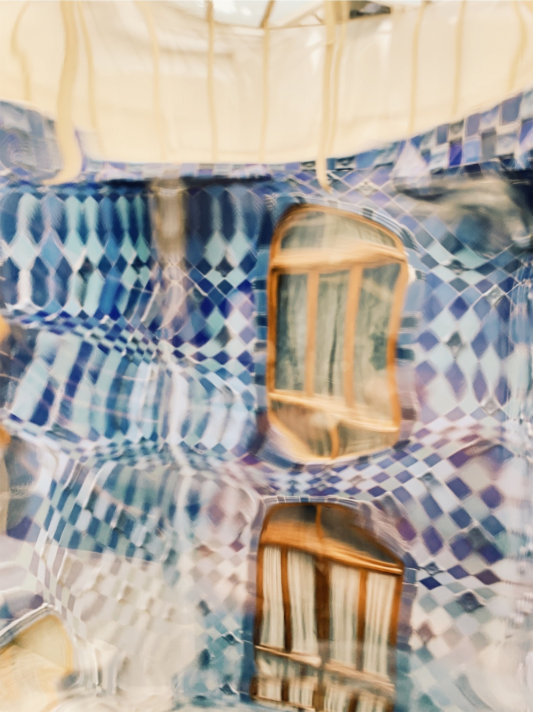
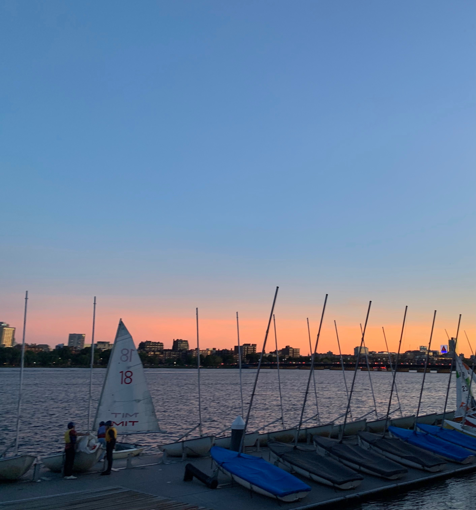

Hey, I’m Shefali! I am a full stack developer pursuing a double major Computer Science and Philosophy.
I enjoy the creative aspect to computer science as well as the the practical applications of often theory heavy courses. For example, I am currently researching how network flow can be utilized to model optimal vaccine distribution.
On the philosophy side of things, I recently took a course on evolutionary game theoretic models which I really enjoyed. I am also interested in information ethics; you can find my most recent paper on the roles which corporations play in misinformation here.
When I'm not programming you can find me practicing my flute (currently learning this), sailing, or skateboarding.


Gaudi's Caso Batló, taken in Barcelona, June 2019

Sunset over the MIT Sailing Pavillion. taken in Boston, September 2019